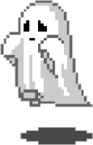

FollowMe
Worker idle
Last run 2h ago, next in 4h
Visitor
Owner
Dark
Demo
This is a demo. Every developer shown here is fictional, and nothing connects to GitHub.
View the real project
Last 30 days
Followed
Unfollowed
Developer
Score
Why this score
Status
Recent activity
Last 5 events
Settings
Minimum score to follow
60
Profiles below this score are skipped.
Follows per day
Keeps the account well inside GitHub's limits.
Unfollow non-followers after
3 days
7 days
14 days
30 days
Run schedule
Every 3 hours
Every 6 hours
Every 12 hours
Every day
Cancel
Save changes